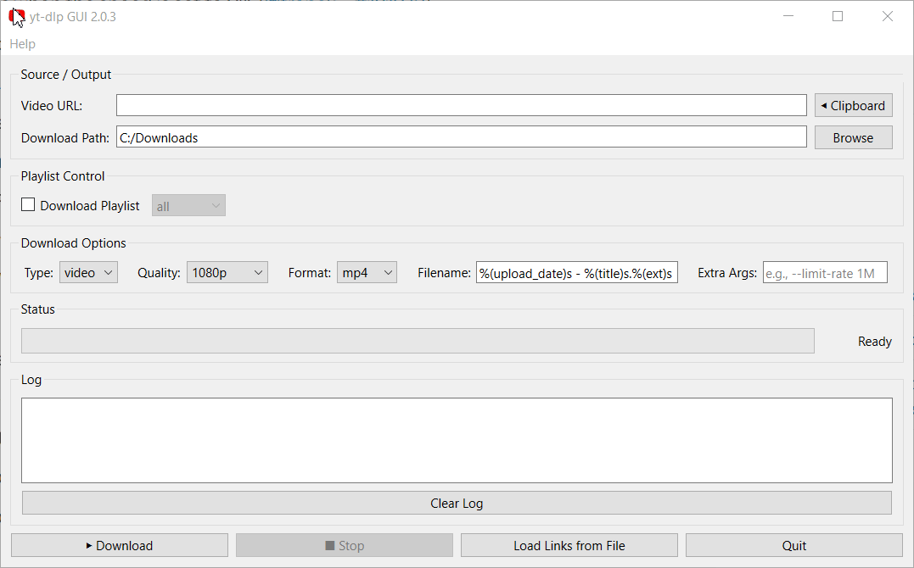

Сайты, которые поддерживает yt-dlp
YouTube, VK, OK, Twitter/X, TikTok, Instagram*, Dailymotion, Reddit и тысячи других — покрытие целиком берётся от yt-dlp.
Загрузка из списка ссылок, прогресс и итог — всё в одном окне.

Портативное приложение для Windows
yt-dlp GUI — лёгкая графическая обёртка над yt-dlp. Один файл, никакой установки: запустил, вставил ссылку, получил файл.
Всё, что нужно для загрузки видео и аудио, — и ничего лишнего.
YouTube, VK, OK, Twitter/X, TikTok, Instagram*, Dailymotion, Reddit и тысячи других — покрытие целиком берётся от yt-dlp.
Сохраняйте полноценные видеоролики или извлекайте звук в MP3/M4A.
Выберите пресет качества (до 4K), ограничьте разрешение по высоте или задайте конкретный формат.
Скачивайте плейлист целиком, диапазон или выбранные элементы.
Задайте свой шаблон, например %(title)s [%(id)s].%(ext)s, и сохраняйте файлы так, как удобно.
Пробросьте любые флаги yt-dlp вручную, если нужно нестандартное поведение.
Импортируйте .txt-список ссылок — приложение скачает их по очереди в одном запуске.
Выбор качества, шаблон имени и дополнительные аргументы сохраняются между запусками.
Установка не требуется — приложение работает одним файлом.
yt-dlp-gui-portable-v2.0.3.exe со страницы релизов.C:\yt-dlp-gui\..exe. Windows может показать предупреждение SmartScreen — нажмите «Подробнее» → «Выполнить в любом случае».Четыре шага — и файл у вас на диске.
Скопируйте адрес страницы с видео и вставьте его в поле Source.
Тип (видео/аудио), качество, формат, шаблон имени и дополнительные аргументы.
Нажмите «Скачать» — прогресс отображается в реальном времени.
Готовый файл окажется в папке Downloads или там, куда вы его направите.
Проект бесплатный и с открытым кодом. Если он оказался полезным, можно поддержать его донатом.
Поддержать на Ko-fi Сообщить о проблемеОтсканируйте QR-код